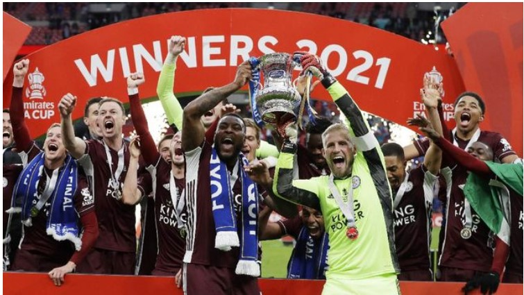

Salah satu pemain Leicester City, Daniel Amartey merayakan gelar juara Piala FA dengan membuang panji Chelsea di ruang ganti pemain. Dalam rekaman yang diunggah oleh Wesley Fofana dan kemudian dikutip oleh ESPNFC